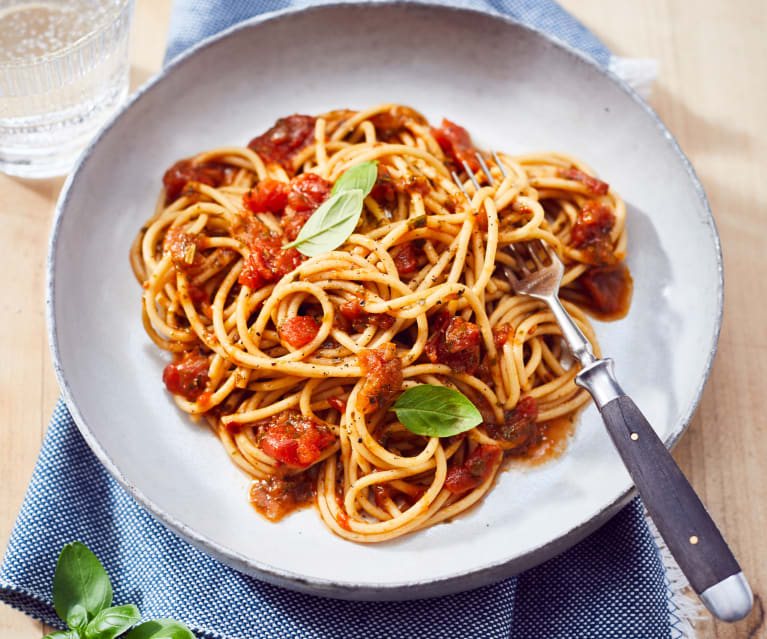

Spaghetti

Opis:
Pyszne i lekkie spaghetti na bazie mięsa z udźca indyka z dodatkiem marchwi i selara naciowego.
Składniki:
- 500 g pełnoziarnistego makaronu spaghetti
- 500 g mielonego mięsa z udźca indyka
- 2 marchewki
- 4 ząbki czosnku
- 4 łodygi selera naciowego
- 2 puszki pomidorów
- 2 średnie cebule
- oliwa z oliwek
- sól
- pieprz
- bazylia
- oregano
- tymianek
- czosnek
- papryka słodka
- papryka ostra
Przygotowanie:
- Przyprawić mięso i pozostawić w lodówce na kilka godzin.
- Pokroić cebulę i seler naciowy, marchew zetrzeć.
- Na patelni rozgrzać oliwę, wrzucić mięso i chwilę podsmarzyć.
- Dodać cebulę i poczekać aż zmięknie.
- Czosnek wycisnąć przez praskę, wrzucić na patelnię razem z selerem i marchwią.
- Dodać pomidory z puszki, dusić przez 15min.
- Makaron ugotować zgodnie z instrukcją na opakowaniu.
- Makaron z sosem przełożyć na głębokie talerze.